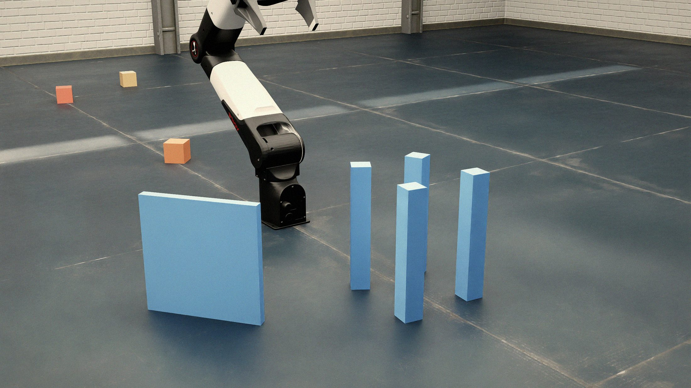
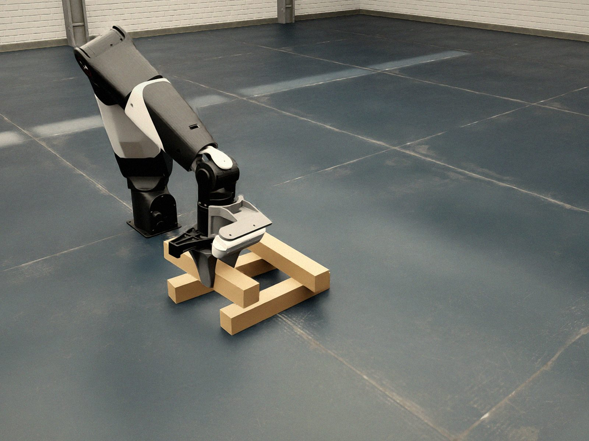
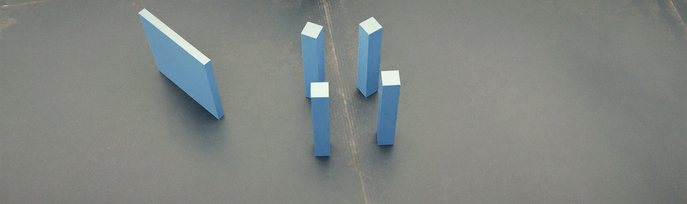

자연어 명령을 받아 7축 로봇팔이 물체를 찾아 집고, 어디에 어떤 자세로 놓을지는 LLM이 정합니다.

집는 방법과 팔이 움직이는 경로는 검증된 도구가 맡습니다. 로봇이 스스로 정하기 어려운 것, 곧 "이 물체를 어디에 어떤 자세로 놓아야 명령의 뜻에 맞는가"를 LLM이 판단합니다.
계획이 서지 않으면 계획기가 이유를 돌려주고, LLM은 그 이유를 보고 조건을 풀지, 포기할지를 다시 판단합니다.
사진 두 장과 깊이로 잰 형상, 사용자 명령을 받아 멀티모달 LLM이 놓을 면과 방향 조건을 정합니다. 파지는 LLM이 고르지 않습니다. 조건에 맞는 파지와 경로는 cuRobo가 찾고, 없으면 그 이유가 LLM에게 돌아갑니다.

팔을 돌려 장면을 훑고 덩어리를 검출한 뒤, CLIP으로 자연어 대상과 연결합니다. 물체 종류를 미리 정해 두지 않습니다.
물체 점군에서 6자유도 파지 후보를 만듭니다. 기하·IK 필터와 학습 모델이 순위를 매깁니다.
집는 자세와 놓는 자세를 한 번에 계획합니다. 충돌과 놓기 조건을 같이 검사하므로 "집었는데 놓을 수 없는" 파지를 피합니다.
계획된 궤적을 Isaac Sim의 로봇이 그대로 따릅니다. 놓은 뒤에는 카메라로 결과를 확인합니다.
PC가 시뮬레이션과 실행을, Jetson AGX Thor가 파지 후보·계획·접지·LLM 추론을 맡습니다.

팔을 돌려 장면을 훑고 덩어리를 검출한 뒤, CLIP으로 명령 속 대상과 연결합니다.
물체 점군을 Contact-GraspNet에 넣어 6자유도 파지 후보를 받습니다.
닿지 않거나 이웃과 부딪히는 후보를 걸러 내고, 학습 모델이 순위를 매깁니다.
cuRobo가 집기와 놓기를 함께 계획합니다. 놓기 조건에 맞는 자세와 충돌 없는 경로가 있어야 통과합니다.
계획된 궤적을 ros2_control로 실행합니다. 쥐었는지, 놓였는지는 그리퍼 폭과 카메라로 확인합니다.
결과가 조건과 다르면 다시 계획하거나 LLM에게 묻습니다. 계획이 서지 않은 이유도 LLM에게 돌아갑니다.
과제마다 한 번 실행한 장면을 4배속으로 줄였습니다. 잘라낸 구간은 없습니다.
| 위치 | 구성 요소 | 역할 |
|---|---|---|
| PC | 실시간 루프 discover_object.py | 탐색, 인식, 집기, 놓기, 검증을 잇는 본체 |
| PC | MCP 서버 nero-rt | LLM이 로봇을 부리는 도구: 조사, 집기, 놓기, 분류 |
| PC | Isaac Sim, ROS 2, cuRobo IK | 시뮬레이션, 궤적 실행, 역기구학 |
| Jetson | Contact-GraspNet 서버 | 파지 후보 생성과 선별 |
| Jetson | cuRobo 계획 서버 | 집기와 놓기 동시 계획, 놓기 조건 검사 |
| Jetson | CLIP 서버, vLLM(Gemma 4) | 자연어 접지, 놓기 자세 판단 |